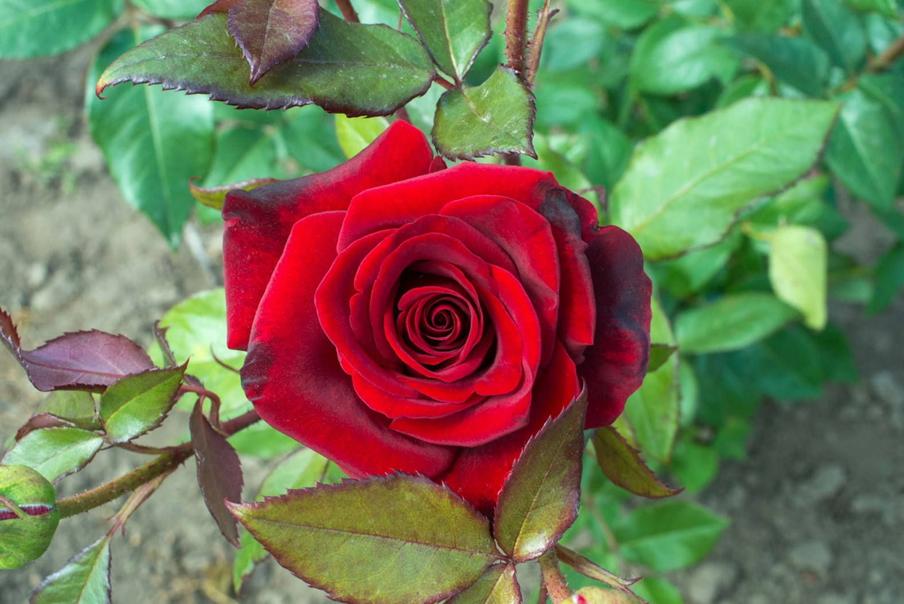
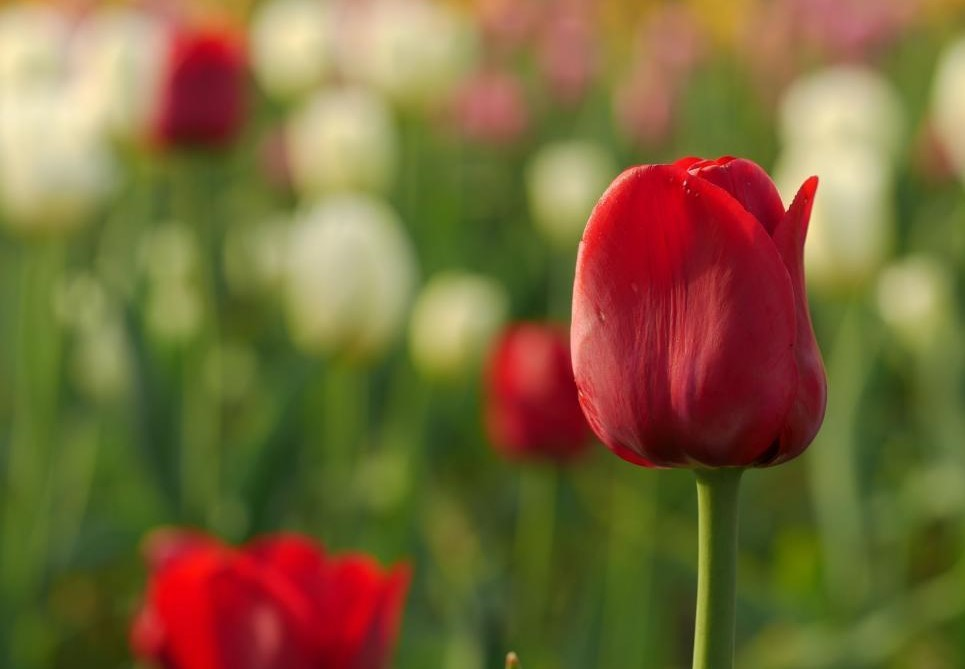
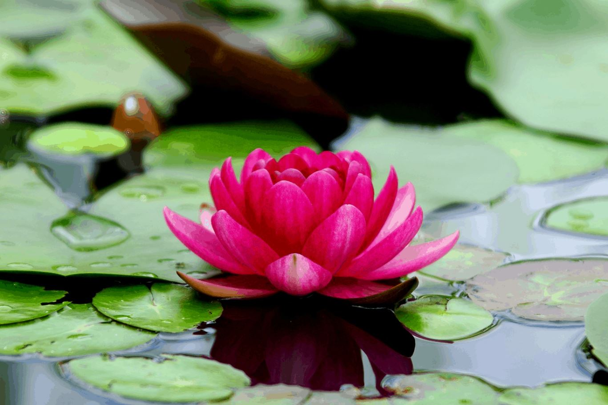
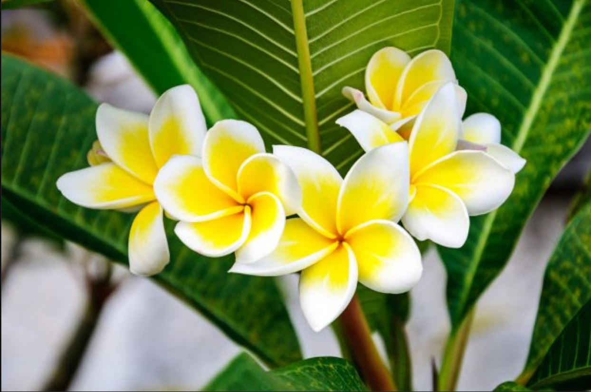
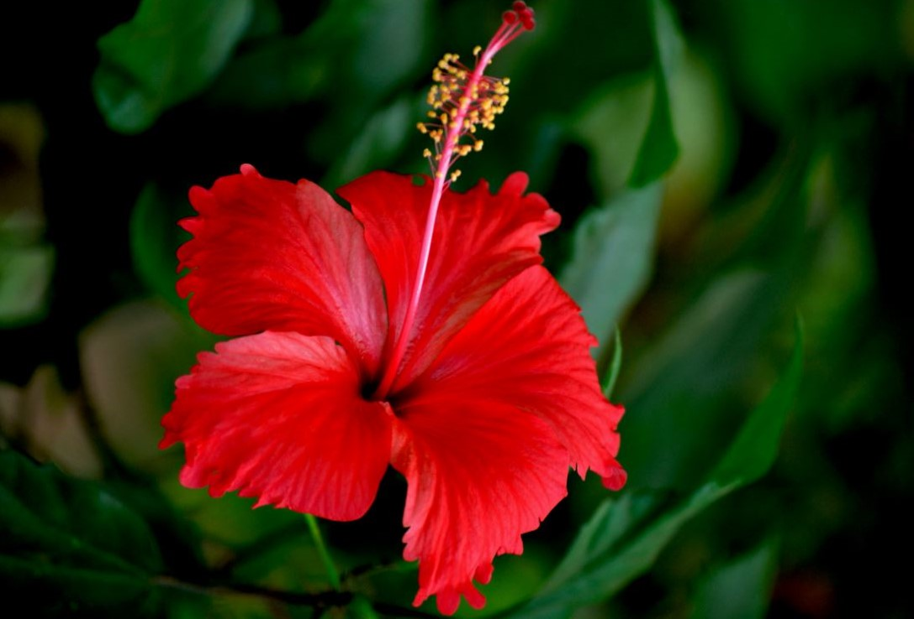

Rose
A Rose is a woody perennial flowering plant of the genus Rosa, in the family Rosaceae, or the flower it bears. There are over three hundred species and tens of thousands of cultivars. They form a group of plants that can be erect shrubs, climbing, or trailing, with stems that are often armed with sharp prickles.
Tulip
Tulips are form a genus of spring-blooming perennial herbaceous bulbiferous geophytes (having bulbs as storage organs). The flowers are usually large, showy and brightly coloured, generally red, pink, yellow, or white. They often have a different coloured blotch at the base of the tepals (petals and sepals), internally.
Lotus
The Lotus flowers grow over the water. Lotus leaves often float on top of the water. It is also known as Nulumbo. The roots of lotus plants are in the mud under the water. Every part of every plant must have air for respiration. Air spaces in the stems and roots make the lotus able to live and respire under water.
Merigold

Marigold flowers are made up of multiple layers of overlapping petals with the petals getting smaller and more condensed towards the flowers center, similiar to that of a carnation. The blooms may be single or double colored and can be varying hues of yellow, orange, red and maroon.
Plumeria
Plumeria, which is otherwise known as Frangipani, Pagoda tree, Temple tree and West Indian Jasmine is the world's most beloved garden plant. It is a large shrub or a tree that can be grown in tropical and sub-tropical climates.Each and every Plumeria variety has unique fragrance!
Hibiscus
Hibiscus is a genus of flowering plants in the mallow family, Malvaceae. The genus is quite large, comprising several hundred species that are native to warm temperate, subtropical and tropical regions throughout the world. Member species are renowned for their large, showy flowers and those species are commonly known simply as "hibiscus" or rose mallow.
Carnation

The Carnation is a flower that is often used in bouquets and corsages. People have grown carnations in gardens for more than 2,000 years. The scientific name of the carnation is Dianthus caryophyllus. Carnations originally grew wild in the area around the Mediterranean Sea. The hundreds of kinds grown today include some purple and yellow shades.